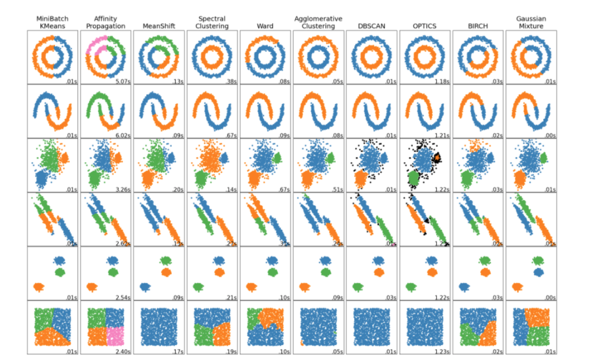
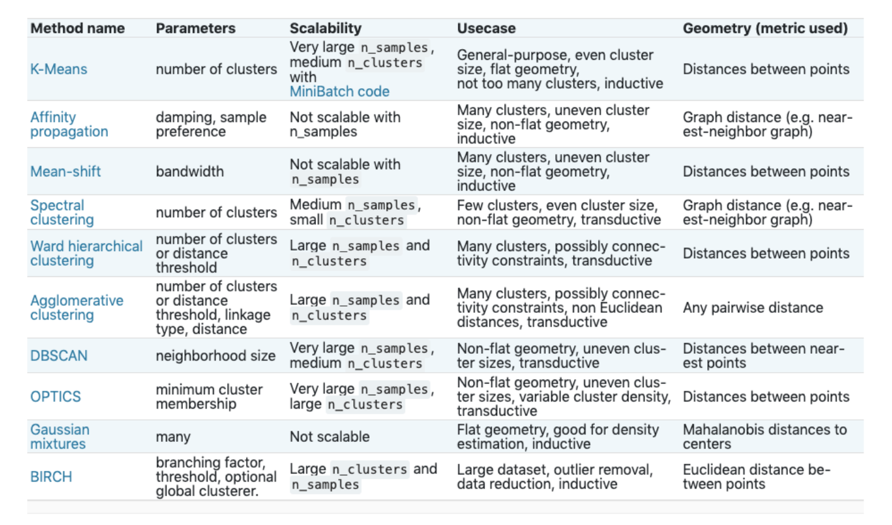
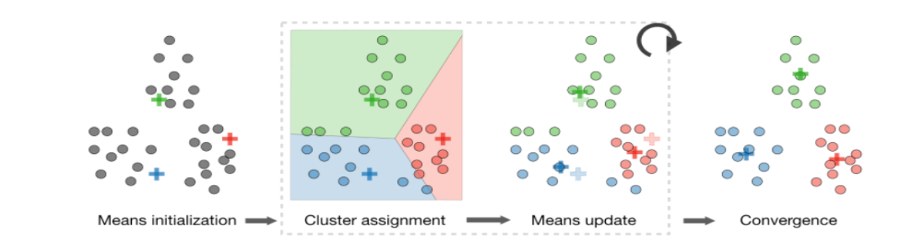

Clustering
Overview

Selecting Cluster Algorithm

K-Means Clustering
KMeans is an iterative process and aims to partition
Nobservations intoKwhere observation belongs to the cluster with the closest mean.By assigning
Nobservations toKclusters such that within each the average dissimilarity of the observations from the cluster mean (i.e. centroid) is minimized.Specify the number of clusters
kRandomly pick k centroids from the data points as initial cluster centers
Assign each sample to the nearest centroid (i.e. Euclidean distance)
Move the centroids to the center of the samples that were assigned to it
Repeat the
thirdandfourthsteps until the cluster assignment converges

Evaluation of Clusters
Elbow method:
plot number of clusters versus interia
Inertia: measure of how internally coherent clusters are
Cohesion: measures how closely related are objects in a cluster
Separation: measures how distinctly separated a cluster is from other clusters
Calinski-Harabasz:
Also known as the
Variance Ratio CriterionIndicates how well a clustering model defines its clusters, such that the higher the score, the more dense and well separated the clusters are.
Silhouette Coefficient:
Is calculated using the mean intra-cluster distance (a) and the mean nearest-cluster distance (b) for each sample.
The Silhouette Coefficient for a sample is (b - a) / max(a, b)
The best value is 1 and the worst value is -1.
Values near 0 indicate overlapping clusters. Negative values generally indicate that a sample has been assigned to the wrong cluster, as a different cluster is more similar.
Difference between KNN and KMeans
K-NN is a Supervised machine learning while K-means is an unsupervised machine learning.
K-NN is a classification or regression machine learning algorithm while
K-NN performs much better if all of the data have the same scale but this is not true for K-means.
K-means is a clustering machine learning algorithm and used for unsupervised ML tasks.
Hierarchical Clustering
Agglomerative Clustering is a clustering algorithm that builds nested clusters by merging or splitting them successively.
This hierarchy of clusters is represented as a tree (or dendrogram).
Hierarchical clustering using a bottom up approach:
Each observation starts in its own cluster, and clusters are successively merged together.
Hierarchical clustering algorithms aims at optimizing different objective functions:
Ward minimizes the sum of squared differences within all clusters. It is a variance-minimizing approach and in this sense is similar to the k-means objective function but tackled with an agglomerative hierarchical approach.
Maximum or complete linkage: minimizes the maximum distance between observations of pairs of clusters.
Average linkage minimizes the average of the distances between all observations of pairs of clusters.
Single linkage minimizes the distance between the closest observations of pairs of clusters.
DBSCAN
Clustering algorithm views clusters as areas of high density separated by areas of low density.
Clusters found by DBSCAN can be any shape, as opposed to k-means which assumes that clusters are convex shaped.
Affinity Propagation
Affinity Propagation creates clusters by sending messages between pairs of samples until convergence.
The messages sent between pairs represent the suitability for one sample to be the exemplar of the other, which is updated in response to the values from other pairs.
This updating happens iteratively until convergence, at which point the final exemplars are chosen, and hence the final clustering is given.